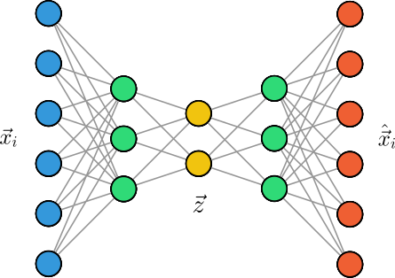
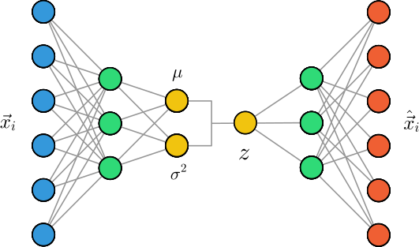
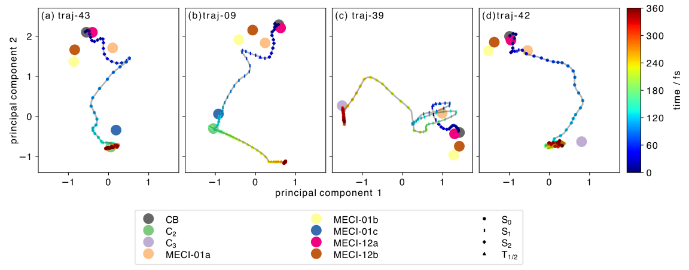
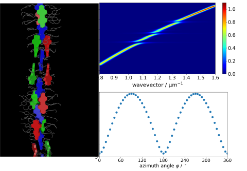
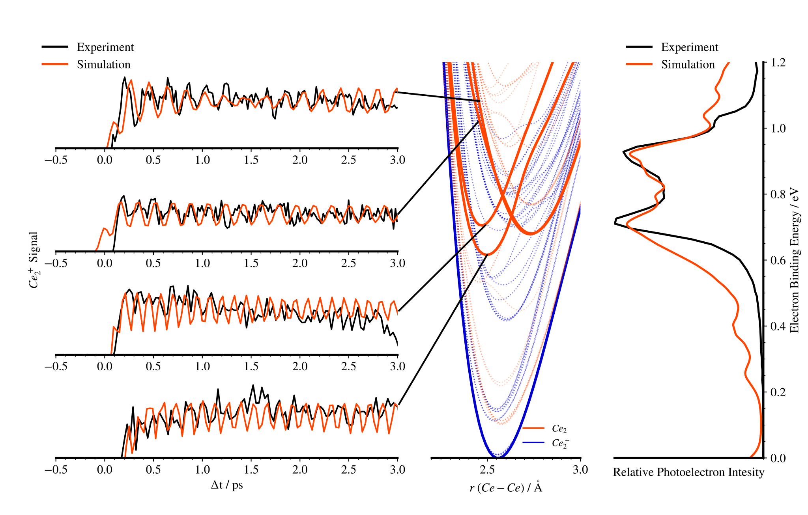

Zusammenfassung und Ausblick
In diesem Kurs haben Sie neben den Grundlagen des Programmierens mit Python auch einige wichtige numerische Methoden, wie die Lösung von Differentialgleichungen oder die Fourier-Transformation, kennengelernt, sowie einen Einblick in das maschinelle Lernen erhalten. Dazu zählen Methoden des überwachten und unüberwachten Lernens, sowie neuronale Netzwerke, wobei wir uns auf die Anwendung dieser Methoden in der Chemie konzentriert haben. Wir möchten dabei betonen, dass wir Ihnen in diesem Kurs nur einen kleinen Einblick in die behandelten Themen geben konnten. Mit Ihrem erworbenen Wissen und Fähigkeiten sind Sie jedoch durchaus in der Lage, auch komplexere Probleme zu lösen und eigene Projekte zu realisieren, wozu wir Sie ausdrücklich ermutigen.
In der Chemie spielen maschinelle Lernverfahren eine immer wichtigere Rolle, da sie es ermöglichen, komplexe Zusammenhänge in großen Datenmengen zu erkennen und zu nutzen. Wir möchten Ihnen daher abschließend einen Einblick in den aktuellen Stand des maschinellen Lernens in der Chemie geben, sowie einige aktuelle Forschungsthemen aus unserem Arbeitskreis vorstellen.
Aktueller Stand des maschinellen Lernens in der Chemie
Zunächst möchten wir eines der spannendsten Anwendungsgebiete des maschinellen Lernens (in der Chemie und allgemein) motivieren, der Generierung von neuen und unbekannten Daten (engl. generative modeling). Dies ist abzugrenzen von den bisherigen diskriminativen Methoden, die darauf abzielen, bekannte Daten zu klassifizieren oder zu regressieren. Generative Modelle hingegen erlauben es, neue Daten zu generieren, die den bekannten Daten ähneln, aber nicht notwendigerweise identisch sind.
Variational Autoencoder (VAE)
Da dies ein Problem des unüberwachten Lernens ist, überlegen wir zunächst, wie wir neuronale Netzwerke für das unüberwachte Lernen, z.B. die Dimensionsreduktion einsetzen können. Erkennen wir die Flexibilität von neuronalen Netzwerken, so ist es naheliegend, einfach die Anzahl der Neuronen in der Ausgabeschicht zu reduzieren, um eine Dimensionsreduktion zu erreichen. Wir müssen uns jedoch bewusst sein, dass wir, um eine möglichst effiziente Dimensionsreduktion zu erreichen, eine Objektivfunktion definieren müssen. Eine Möglichkeit besteht darin, nach der Dimensionsreduktion die Daten wieder zu rekonstruieren. Solche Modelle werden als Autoencoder bezeichnet, da sie an ihrer schmalsten Stelle die wichtigsten Informationen über die Daten automatisch enkodieren müssen, um sie im Anschluss wieder dekodieren zu können (siehe Abbildung).

Die Verlustfunktion eines Autoencoders, die die Differenz zwischen den Eingabedaten und den rekonstruierten Daten bestimmt, wird als Rekonstruktionsfehler bezeichnet:
Wir können uns die komprierte Darstellung der Daten als einen versteckten Raum (engl. latent space) vorstellen, der durch die schmalste Schicht des Autoencoders definiert wird. In der folgenden Abbildung ist dies für Bilder des MNIST-Datensatzes dargestellt, wobei wir erkennen, dass der Autoencoder die Daten gemäß ihrer Klassen gruppieren kann, obwohl er nicht explizit darauf trainiert wurde.

Wie können wir diese Architektur nun nutzen, um neue Daten zu generieren? Ein naiver Ansatz wäre, einfach zufällige Werte für den versteckten Raum zu samplen und diese durch den Dekoder zu schicken. Dies führt jedoch zu keinen sinnvollen Ergebnissen, da der Autoencoder nicht explizit darauf trainiert wurde, dass der versteckte Raum eine sinnvolle Struktur aufweist. Wir benötigen also eine Form der Regularisierung, die sicherstellt, dass der versteckte Raum koninuierlich ist und das Generieren neuer Daten ermöglicht. Eine Möglichkeit besteht darin, die Verteilung der versteckten Variablen so zu modellieren, dass sie einer bekannten und einheitlichen Verteilung, z.B. einer Normalverteilung, entspricht. Dazu enkodieren wir die Daten nicht direkt als latente Vektoren , sondern lernen stattdessen den Mittelwert und die Varianz der Normalverteilung, die die versteckten Variablen beschreibt. Ein neuer Datenpunkt wird dann durch Sampling eines zufälligen latenten Vektors und Dekodierung durch den Dekoder generiert. Dieses Modell wird als Variational Autoencoder (VAE) bezeichnet (siehe Abbildung).

Die Parameter des VAE (Gewichte und Bias der neuronalen Netze) werden dann durch Minimierung der Verlustfunktion
optimiert, die aus zwei Teilen besteht. Der erste Teil ist der Rekonstruktionsfehler, analog zum Autoencoder. Der zweite Teil misst die Ähnlichkeit zwischen der Verteilung der versteckten Variablen und der gewünschten Normalverteilung, was in der Regel durch die Kullback-Leibler-Divergenz (KL-Divergenz) dargestellt wird. Dadurch erreichen wir, dass der versteckte Raum eine sinnvolle Struktur annimmt, was in der folgenden Abbildung für den MNIST-Datensatz dargestellt ist.

Da die Generierung von schwarz-weißen Bilder von Ziffern ein zugegebenermaßen langweiliges Beispiel darstellt, haben wir einen (einfachen) VAE auf dem CelebA-Datensatz trainiert, der ca. 200.000 Bilder von prominenten Persönlichkeiten enthält. In der folgenden Abbildung sehen Sie oben einige Beispiele von Bildern aus dem Datensatz und die im Trainingsprozess rekonstruierten Bilder. Unten sehen Sie einige Beispiele von zufällig generierten Bildern, die durch den VAE erzeugt wurden.

VAEs sind eines der ersten generativen Modelle, die neben der Generierung von Bildern auch für die Generierung neuer Moleküle eingesetzt wurden. Die Struktur des versteckten Raums erlaubt es, eine kontinuierliche Repräsentation von Molekülen zu erlernen, die es ermöglicht, neue Moleküle zu generieren.1
Auch wenn wir mit unserer eigenen Implementierungen von neuronalen Netzen in diesem Kurs theoretisch in der Lage wären, einen (variational) Autoencoder zu konstruieren und trainieren, ist dies doch sehr ineffizient und umständlich. Das liegt insbesondere daran, dass wir die Gradienten der Verlustfunktionen manuell berechnen müssten, was sehr zeitaufwändig ist.
In der Praxis verwendet man daher spezielle Bibliotheken, wie z.B. Pytorch, die es erlauben, Gradienten von allgemeinen Funktionen automatisch zu berechnen. In Pytorch wird dazu ein Rechengraph erstellt, der die Abhängigkeiten der Variablen und Funktionen darstellt. Die Bibliothek kann dann automatisch die Gradienten von beliebigen Funktionen berechnen, indem sie den Rechengraphen rückwärts durchläuft.
Sie können die Implementierung des oben gezeigten Modells in Pytorch hier herunterladen und auf Ihrem eigenen Rechner ausführen.
Achtung: Wir empfehlen Ihnen, Python-Pakete wie Pytorch, die
viele Abhängigkeiten von anderen Paketen haben, nicht in Ihrer
base-Umgebung zu installieren, sondern stattdessen
eine separate Umgebung
zu erstellen.
Diffusionsmodelle
Auch wenn VAEs in der Lage sind, versteckte Strukturen in den Daten zu lernen und neue Daten zu generieren, sind sie für der Generierung von hochqualitativen und realistischen Daten nicht optimal geeignet. Für sehr detailreiche Bilder eignen sich z.B. Generative Adversarial Networks (GANs), die allerdings auch ihre eigenen Schwächen haben. Als besonders vielversprechend haben sich in den letzten Jahren Diffusionsmodelle (eng. diffusion models) herausgestellt, die auf Prinzipien der statistischen Physik basieren. Die grundlegende Idee ist ähnlich zu VAEs, nämlich eine latente Darstellung der Daten zu nutzen, die einfach zu erlernen ist und die es erlaubt, neue Daten zu generieren. Anstatt jedoch die Dimensionalität der Daten zu verringern, fügt man in kleinen Schritten zufälliges Rauschen zu den Daten hinzu, bis die Struktur der Daten nicht mehr erkennbar ist. Für jeden Schritt kann dann ein neuronales Netzwerk trainiert werden, welches das im Diffusionsprozess hinzugefügte Rauschen vorhersagt. Die zugrundeliegende Verlustfunktion
ist dann denkbar einfach, was die Effektivität des Modells unterstreicht. Im umgekehrten Diffusionsprozess kann dann das Rauschen schrittweise entfernt werden, um eine verbesserte Version der Daten zu erhalten. Neue Daten können generiert werden, indem ausgehend von einem zufälligen Rauschen schrittweise das Rauschen entfernt wird, bis ein neuer Datenpunkt generiert wurde, der den Trainingsdaten ähnelt. Zudem erlauben Sie es, zusätzliche Informationen, wie z.B. eine Beschreibung des gewünschten Objekts auf einem Bild, in den Prozess zu integrieren.
Diffusionsmodelle sind heutzutage die Grundlage für die meisten kommerziell oder frei verfügbaren Modelle zur Generierung von Bildern, wie z.B. Stable Diffusion, DALL-E oder Imagen. In letzter Zeit wurden sie auch für die Generierung von Molekülen eingesetzt, wobei sie die Atomtypen und -positionen in einem Molekül vorhersagen. Ein solcher Generierungsprozess, der aus einer zufälligen Verteilung ein Molekül generiert, ist in der folgenden Animation dargestellt.
Aktuelle Forschungsthemen in unserem Arbeitskreis
Im Folgenden möchten wir Ihnen einen Einblick in die aktuellen Forschungsthemen am Lehrstuhl für Theoretische Chemie geben. Dazu zählen die Arbeitskreise von Prof. Dr. Roland Mitrić und Dr. Merle Röhr. Zudem stellen wir Ihnen kurze Codebeispiele vor (Python und andere Programmiersprachen), die beispielhaft für die Forschungsthemen stehen und in denen Sie sicherlich einige der in diesem Kurs erlernten Konzepte wiedererkennen werden.
Nicht-adiabadische Dynamik mit Trajectory Surface Hopping
Im Rahmen der Trajectory Surface Hopping Methode bewegen sich die Moleküle in einem -dimensionalen Konfigurationsraum, wobei die Anzahl der Atome im Molekül ist. Selbst bei kleinen Molekülen ist dieser Konfigurationsraum für Menschen nur schwer vorstellbar. Allerdings ist ein Großteil dieses Konfigurationsraums für die Dynamik uninteressant, da sie wegen ihrer hohen Energie (z.B. durch sehr große Bindungsabsände) für das Molekül nicht zugänglich sind. Das erlaubt uns, Dimensionalitätsreduktionstechniken zu verwenden, um den hochdimensionalen Konfigurationsraum auf eine niedrigdimensionale Darstellung zu projizieren, ohne dabei zu viele Informationen zu verlieren. Im folgenden Codebeispiel wird die multidimensionale Skalierung (MDS) verwendet, um eine niedrigdimensionale Darstellung des Konfigurationsraums zu berechnen.
def perform_traj_mds(atnos, ref_coords, traj_coords, ndim=2,
npi_pairs=None, dist_pairs=None, max_dist=None):
nref = len(ref_coords)
coords = np.concatenate((ref_coords, traj_coords))
descriptors, weights = get_geom_descriptor(
atnos, coords,
npi_pairs=NPI_PAIRS, dist_pairs=DIST_PAIRS, max_dist=MAX_DIST,
)
dissimilarities = get_desc_distmat(descriptors, weights)
mds = MDS(
n_components=ndim, dissimilarity='precomputed', random_state=42,
n_init=32, max_iter=1000, eps=1e-4,
)
embedding = mds.fit_transform(dissimilarities)
return embedding
Diese Technik wurde für die Untersuchung der Photodissoziationsdynamik von Cyclobutanon eingesetzt.2 Eine Darstellung von 4 repräsentativen Trajektorien sind in der folgenden Abbildung zu sehen.

Fragment-basierte Methoden für die Berechnung von angeregten Zuständen in großen molekularen Aggregaten
Die theoretische Beschreibung von dynamischen Prozessen, wie Exciton-Transfer oder Ladungstransfer, in organischen Halbleitern und komplexen molekularen System erfordert Methoden, die die Berechnung von großen molekularen Aggregaten ermöglichen, die aus tausenden Atomen bestehen. Die “traditionellen” quantenchemische Methoden, wie z.B. Hartree-Fock oder Dichtefunktionaltheorie, sind aufgrund ihrer starken Skalierung mit der Systemgröße nicht in der Lage, solche Systeme in angemessener Zeit zu berechnen. Um diese Problematik anzugehen, entwickelt unsere Gruppe neue theoretische Methoden, die solche großen molekularen Systeme beschreiben können. Dazu kombinieren wir semiempirische quantenchemische Methoden (DFTB) mit einem Fragmentierungsansatz (FMO) in einem neuen theoretischen Formalismus, der es erlaubt die angeregten Zustände von großen molekularen Aggregaten zu berechnen und die Molekulardynamik dieser angeregten Zustände zu simulieren.3,4
#![allow(unused)] fn main() { // create the A matrix from the orbital energy differences, // the Coulomb and the exchange contributions let h: Array2<f64> = self.fock_and_coulomb() - self.exchange(); // solve the eigenvalue problem A x = w A using the eigenvalue decomposition let (eigenvalues, eigenvectors) = h.eigh(UPLO::Upper).unwrap(); // Reference to the o-v transition charges. let q_ov: ArrayView2<f64> = self.properties.q_ov().unwrap(); // The transition charges for all excited states are computed. let q_trans: Array2<f64> = q_ov.dot(&eigenvectors); // The Mulliken transition dipole moments are computed. let tr_dipoles: Array2<f64> = mulliken_dipoles(q_trans.view(), &self.atoms); // The oscillator strengths are computed. let f: Array1<f64> = oscillator_strength(eigenvalues.view(), tr_dipoles.view()); }

Abbildung der Ladungstransferdynamik in einem Molekularen System aus 8 BTBT Monomeren. Die Population der Monomere beschreibt den Anteil der elektronischen Anregung, der sich auf den jeweiligen Monomeren befindet. Am Anfang der Dynamik befindet sich das System im Ladungstransferzustand zwischen dem ersten und dem letzten Monomer (Loch auf Monomer 1 und Elektron auf Monomer 8), weshalb die Population auf den Monomeren 50% beträgt. Im weiteren Verlauf der Ladungstransferdynamik bewegt sich die Anregung im molekularen Aggregat langsam vom ersten Monomer in Richtung des letzten Monomers, weil es sich bei diesem Molekül um einen Lochleiter handelt.
Simulation von stark gekoppelten Licht-Materie-Systemen
Energietransport in excitonischen Materialien spielt eine große Rolle für die Anwendung in vielen optoelektronischen Systemen. Während in der Vergangenheit versucht wurden, den Energietransport durch strukturelle Veränderung der verwendeten Moleküle zu verbessern, zielt ein Forschungsschwerpunkt unseres Arbeitskreises darauf ab, dies durch Kopplung der elektronischen Übergänge an starke elektromagnetische Felder zu erreichen, bspw. in Mikrokavitäten. Die Quasiteilchen, die in solchen Systemen entstehen, werden Polaritonen genannt. Genauer beschäftigen wir uns mit der theoretischen Beschreibung von Polaritonen. Dazu müssen viele Konzepte aus dem Studium der theoretischen Chemie zum Einsatz gebracht werden und zusätzlich kombiniert werden mit Methoden der Quantenelektrodynamik. Um reale Systeme zu berechnen, werden die entstehenden Gleichungen numerisch gelöst.
system.build_system()
system.set_operators()
system.set_H()
e, v = np.linalg.eigh(np.real(system.H))
coeff = np.dot(v.T, np.dot(system.a + system.a_dagger, v))
 Unten rechts: Abhängigkeit der Licht-Materie-Kopplung von der relativen Orientierung zwischen der elektrischen Feldstärke des Oberflächenplasmons und dem Übergangsdipolmoment des energetisch tiefsten elektronisch angeregten Zustands der Helix. Links: Dreisträngige helikale Struktur des supramolekularen Perylenbisimid-Aggregats. Oben rechts: Simulierte Dispersionsrelation der Polaritonen bei maximaler Licht-Materie-Kopplung.
Theoretische Untersuchung von kleinen Metallclustern
Dieser Forschungsbereich konzentriert sich auf kleine Metallcluster sowohl im Zeit- als auch im Energieraum (zeitabhängige und zeitunabhängige Prozesse). Ziel ist es, diese kleinen Metallcluster theoretisch so genau wie möglich zu beschreiben. Obwohl diese Cluster nur eine geringe Anzahl von Atomen enthalten, ist ihre Untersuchung aufgrund der komplizierten elektronischen Natur der d- und f-Schalen der Metalle sehr komplex. Diese Cluster sind besonders interessant, weil das Verständnis ihrer katalytischen Aktivität stark von theoretischen Studien profitieren könnte, die derzeit nicht in ausreichendem Maße verfügbar sind.
Dieses Code-Snippet stammt aus einem Programm, das die eindimensionale Schrödinger-Gleichung numerisch exakt löst. Diese Gleichung ist fundamental in der Quantenmechanik, insbesondere für das Verständnis von zweiatomigen Molekülen.
def getHamiltonian(self):
# Initialisiert eine Hamilton-Matrix mit komplexen Nullen
self.hamiltonian = np.zeros((dim, dim), dtype=complex)
# Berechnet die Impulswerte pk
pk = (2. * np.pi / (dim * self.deltax)) * (indrange - dim / 2.)
# Berechnet den kinetischen Term tk
tk = (pk**2) / (2.0 * self.m)
# Berechnet den Exponentialterm W
W = np.exp(2 * np.pi * 1.0j * indrange / dim)
# Schleife durch jede Zeile i der Hamilton-Matrix
for i in range(dim):
# Berechnet die temporären Werte für die Fourier-Transformation
tmp = tk * (W**i) * ((-1)**i)
# Führt die Fourier-Transformation durch und aktualisiert die Hamilton-Matrix-Zeile
self.hamiltonian[i,:] = oneminusone * np.fft.fft(tmp) / dim
Der vorliegende Code hat die Aufgabe, eine Hamilton-Matrix (self.hamiltonian)
zu konstruieren und eine Fourier-Transformation des kinetischen Teils
durchzuführen, da dieser Operator im Impulsraum multiplikativ ist. Zunächst
wird die Dimension des Grids (dim) ermittelt und eine komplexe Nullmatrix
für den Hamiltonian (self.hamiltonian) initialisiert. Anschließend werden
die Impulswerte (pk) berechnet und daraus der kinetische Term (tk) abgeleitet.
Durch eine exponentielle Funktion (W) und eine Schleife über die Matrixzeilen
wird der kinetische Term in den Impulsraum transformiert und mittels
Fourier-Transformation (np.fft.fft) in die Hamilton-Matrix eingetragen.
 Abbildung: Theoretische Untersuchung von Ce2. Links: Vergleich zwischen dem beobachteten NeNePo-Signal im Experiment und den theoretischen Simulationen (Zeitraum). Mitte: Berechnete potentielle Energiekurven. Die hervorgehobenen Zustände stellen die identifizierten Zustände dar, die für das beobachtete Signal verantwortlich sind. Rechts: Vergleich zwischen dem experimentellen Photoelektronenspektrum von Ce2 und dem simulierten Spektrum (Energieraum).
Optimierung von Dimeren für Singlet Fission
In der Arbeitsgruppe Röhr beschäftigen wir uns mit der Optimierung bestimmter Eigenschaften molekularer Aggregate. So hängen bestimmte Eigenschaften stark von der Anordnung der einzelnen Moleküle ab. Ein besonders interessantes Phänomen, mit dem wir uns beschäftigen, ist Singlet Fission. Dabei handelt es sich um einen Prozess in bestimmten organischen Molekülen, bei dem ein einzelnes angeregtes Singlet Exciton in zwei Triplett-Excitonen zerfällt. Dieser Prozess könnte theoretisch den Wirkungsgrad von Solarzellen erhöhen, da ein einzelnes Photon zwei Elektronen-Loch-Paare anregen kann. Unser Ziel ist es, eine Molekülanordnung zu finden, die diesen Singlet Fission sehr schnell durchführt. Solche Molekülanordnungen könnten dann in Solarzellen integriert werden, um deren Wirkungsgrad zu erhöhen.
scaler = StandardScaler()
X = scaler.fit_transform(X)
pca = PCA(n_components=n_components)
pca.fit(X)
transformed_data = pca.transform(X)
explained_variance_ratios = np.array(pca.explained_variance_ratio_)
# Get the principal components
components = np.array(pca.components_)
kmeans = KMeans(n_clusters=n_clusters)
kmeans.fit(transformed_data)
labels = np.array(kmeans.labels_)
centroids = np.array(kmeans.cluster_centers_)
In diesem Forschungsprojekt wurden zufällige PBI-Dimere konstruiert, diese hinsichtlich der sogenannten Singlet Fission-Rate optimiert und aus den optimierten Dimerstrukturen unter anderem Translation und Rotation extrahiert. Anschließend wurde mittels PCA und K-Means-Clustering nach Gemeinsamkeiten in den 500 Strukturen gesucht. Auf diese Weise konnten vier sehr charakteristische Gruppen von Dimeren identifiziert werden.5

Supramolekulare Aggregate des Lichtsammelkomplexes der grünen Schwefelbakterien
Mein Forschungsbereich konzentriert sich auf die Strukturaufklärung von Aggregaten, die in grünen Schwefelbakterien vorkommen. Diese Bakterien sind bemerkenswert für ihre Fähigkeit, in extremen Lichtverhältnissen Photosynthese zu betreiben, wobei sie spezielle Lichtsammelkomplexe, sogenannte Chlorosomen, nutzen. Diese Chlorosomen bestehen aus dicht gepackten Bacteriochlorophyll-Molekülen, die außergewöhnlich effiziente Energietransferprozesse aufweisen. Diese Aggregate bestehen oft aus mehreren konzentrischen Ringen, die eine zylindrische Form zeigen (siehe Abbildung).

Der Code Ausschnitt zeigt eine Implementierung des Frenkel-Exziton-Hamiltonian, der die Wechselwirkungen zwischen den Übergangsdipolmomenten der einzelenen Moleküle im Aggregat einbezieht. Damit kann ein Spektrum des Aggregates simuliert werden und dieses mit experimentellen Daten verglichen werden.
def getExcitonHamiltonian(self):
nmol = len(self.allMolecules)
self.hamiltonian = np.zeros((nmol, nmol))
for i, m in enumerate(self.allMolecules):
self.hamiltonian[i, i] = m.siteEnergy
# convert units! a.u/Angstrom --> eV/a.u
self.hamiltonian += self.getExcitonCoupling() * toang * toev
# create exciton states for aggregate
def getExcitonStates(self):
print("First step: Calculate hamiltonian.")
self.getExcitonHamiltonian()
print("Second step: Solve hamiltonian.")
self.excitonStateEnergies, self.excitonStateCoefficients = np.linalg.eigh(self.hamiltonian)
self.getSiteDipoles()
self.tdMoments = []
print("Third step: tdMoments.")
self.tdMoments = np.dot(np.transpose(self.excitonStateCoefficients), self.dipoles)
np.save("td", self.tdMoments)
np.save("excitonStates", self.excitonStateEnergies)
R. Bombarelli, et al., ACS Cent. Sci. 2018, 4, 2, 268–276.
X. Miao, K. Diemer, R. Mitrić, J. Chem. Phys. 2024, 160, 124309.
R. Einsele, J. Hoche, R. Mitrić, J. Chem. Phys. 2023, 158, 044121.
R. Einsele, R. Mitrić, J. Comput. Theor. Chem. 2024, just accepted.
J. Greiner, A. Singh, M.I.S. Röhr, Phys. Chem. Chem. Phys. 2024, 26, 19257-19265.